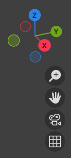
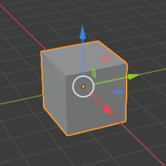
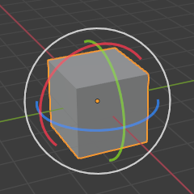
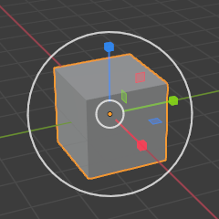

Open Blender
Launch Blender 4.x. The splash screen offers General — choose it for a new file.
3D Modeling · 45–60 minutes · Grades 7–12
Blender's interface looks dense at first, but it is only four workspaces doing four jobs. Learn to navigate the viewport, add and transform objects, and you can build almost anything from here.
Finish line: a saved scene with a floor, a resized cube, and a light, all built with keyboard shortcuts instead of menus.
Blender's axis colors are fixed: red = X, green = Y, blue = Z. Learn them once, read every viewport forever.
Launch
Before you build
Launch Blender 4.x. The splash screen offers General — choose it for a new file.
A cube, a light, and a camera. Every Blender file starts here.
Ctrl+S, then name the file and folder before you make a single change.
Editor
Four places, four jobs
Blender's default layout is one arrangement of many possible editors, but almost every project uses these four. Click each one to see what it is for.
Header: Switches between Object Mode and Edit Mode, and holds the Add, transform-tool, and snapping controls.
Object Mode moves and arranges whole objects. Edit Mode reaches inside one object to move its individual vertices, edges, and faces. Press Tab to switch between them.
Navigate
Move the camera, not the world

Transform
The three moves you'll use forever
Select an object by left-clicking it, then press one of three letters. Each can be locked to an axis, and each accepts a typed number for exact values — this is faster and more precise than dragging.
Move
Press G, move the mouse, click to confirm. Press G Z 2 Enter to move exactly 2m up the Z axis.
Turn
Press R, move the mouse to spin the object, or type R Z 45 Enter for exactly 45°.
Resize
Press S then drag, or type S 2 Enter to double the size on every axis at once.



Press Shift+A anywhere in the viewport to open the Add menu — meshes, lights, cameras, and empties all live there. New objects appear at the 3D cursor, so press Shift+C first if the cursor has wandered.
Build
Hands on
Delete the default cube (select it, press X → Delete). Press Shift+A → Mesh → Plane, then scale it up to about 4m across with S 4 Enter.
Press Shift+A → Mesh → Cube. Move it up onto the floor with G Z 1 Enter, then scale it into a rectangular block, not a perfect cube.
With the block selected, press Tab. Press 1 for vertex select, click one top corner, and move it up a little with G Z. Press Tab again to return to Object Mode.
Select the default light in the Outliner. In the Properties panel's light tab (the light-bulb icon), raise its Power until the block casts a clear shadow.
Double-click "Cube" and "Plane" in the Outliner to give them real names. Press Ctrl+S.
Check